Selected pieces across evening, bridal and made-to-measure dress-making — with an emphasis on construction, fit and finish.
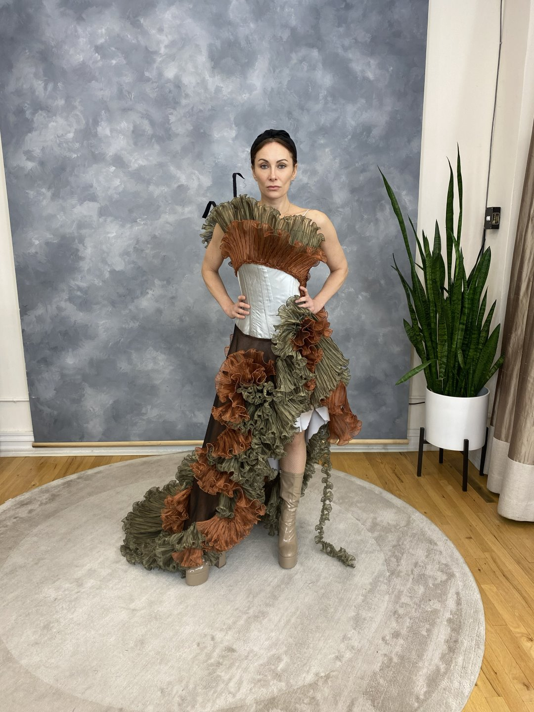
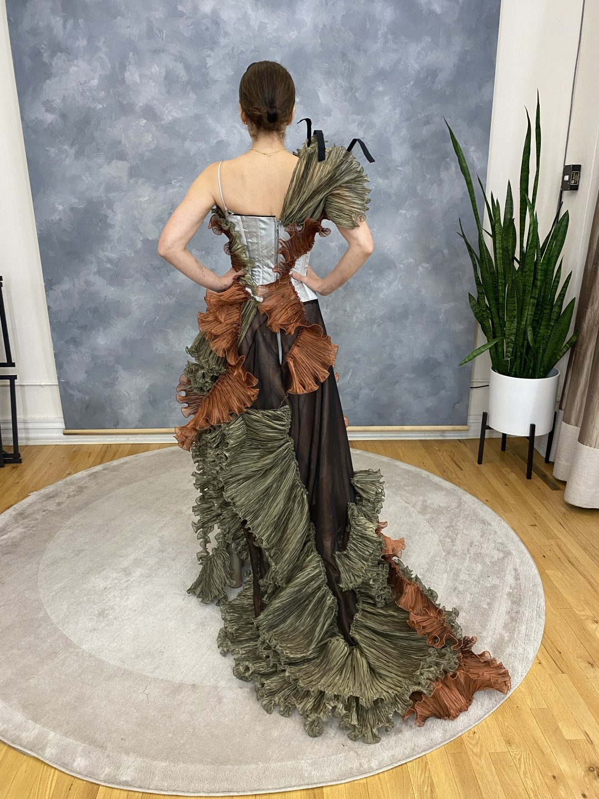
A hand-worked, hand-dyed textile evening gown with a structured bodice and a sweeping ruffled train — constructed on the form, layer by layer, then fitted to the wearer.
It is work of this kind — where structure, movement and finish all have to hold together — that defines the atelier's approach.
Commission a Piece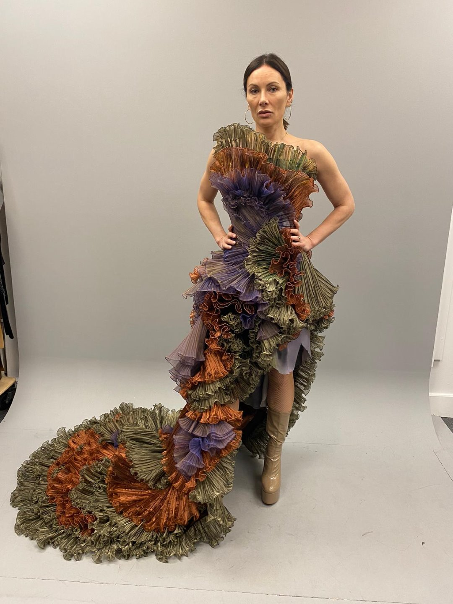
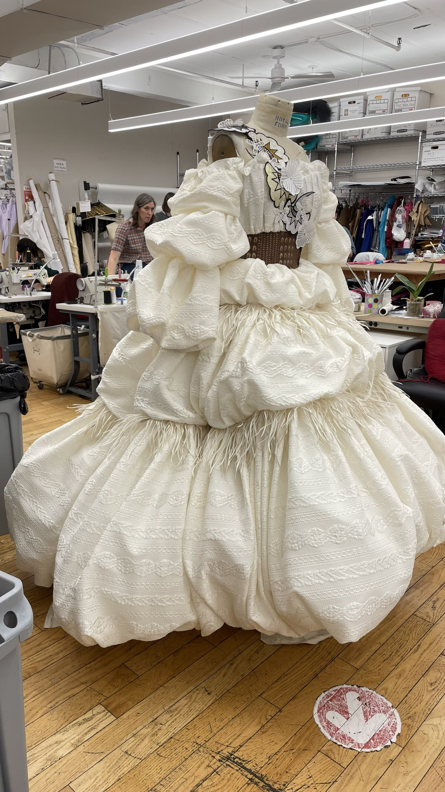
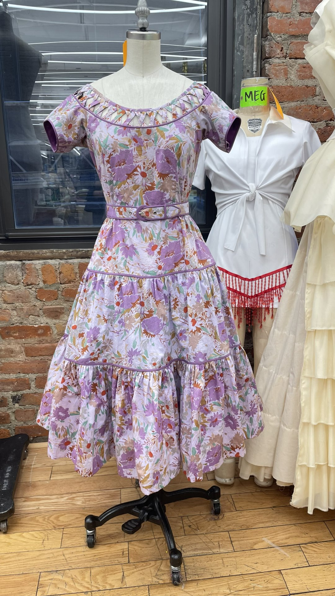
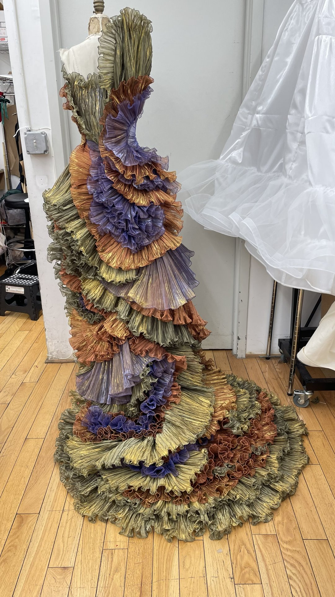
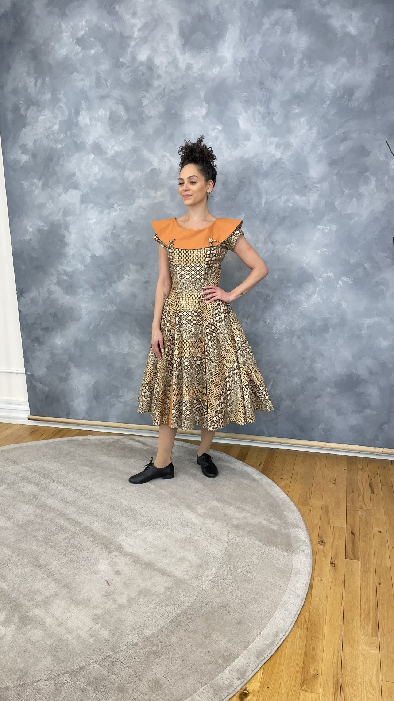
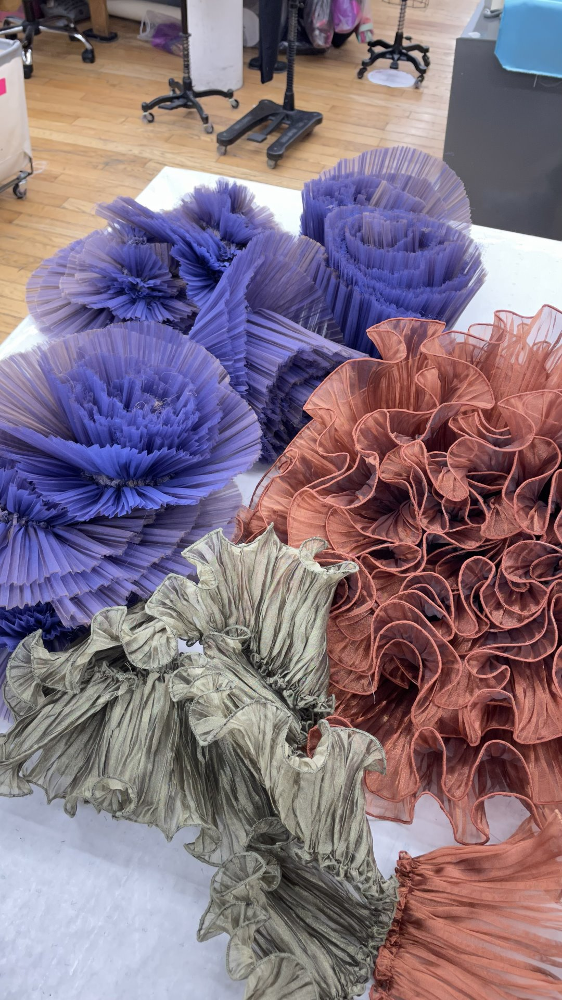
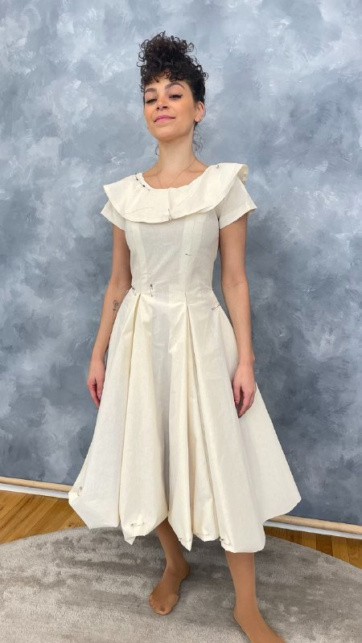
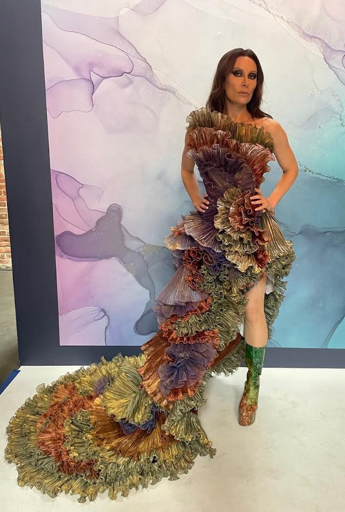
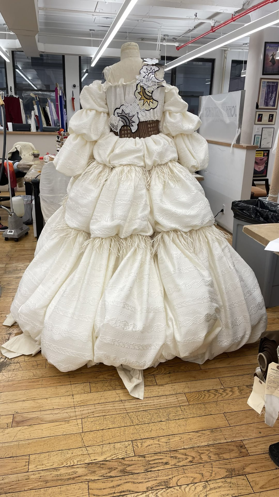
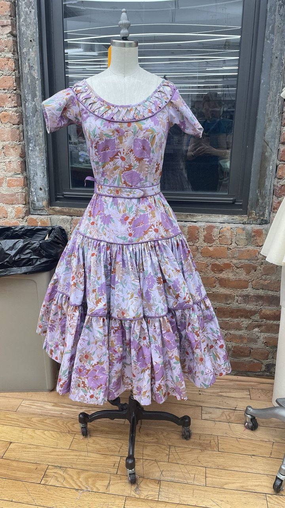
A fuller portfolio of past commissions is shared privately during consultation.
Request the Full Portfolio